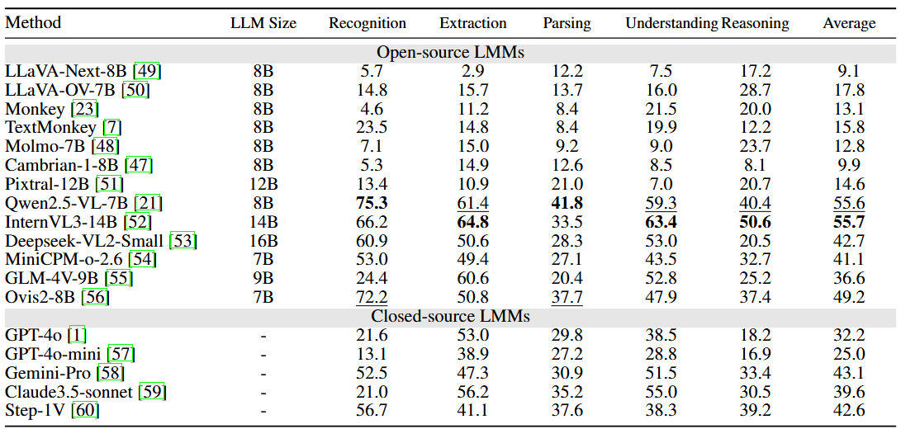
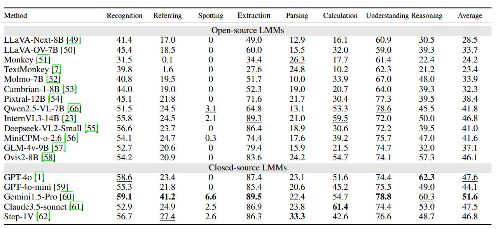
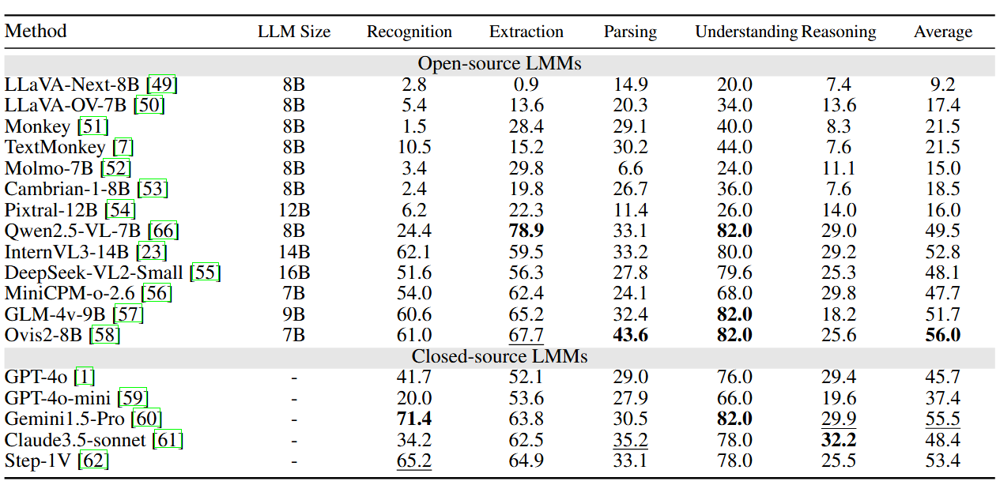

Scoring the Optical Character Recognition (OCR) capabilities of Large Multimodal Models (LMMs) has witnessed growing interest. Existing benchmarks have highlighted the impressive performance of LMMs in text recognition; however, their abilities in certain challenging tasks, such as text localization, handwritten content extraction, and logical reasoning, remain underexplored. To bridge this gap, we introduce OCRBench v2, a large-scale bilingual text-centric benchmark with currently the most comprehensive set of tasks (4X more tasks than the previous multi-scene benchmark OCRBench), the widest coverage of scenarios (31 diverse scenarios), and thorough evaluation metrics, with 10,000 human-verified question-answering pairs and a high proportion of difficult samples. Moreover, we construct a private test set with 1,500 manually annotated images. The consistent evaluation trends observed across both public and private test sets validate the OCRBench v2's reliability. After carefully benchmarking state-of-the-art LMMs, we find that most LMMs score below 50 (100 in total) and suffer from five-type limitations, including less frequently encountered text recognition, fine-grained perception, layout perception, complex element parsing, and logical reasoning..
Leaderboard
Performance of LMMs on English tasks of public data
| Rank | Method | Recognition | Referring | Spotting | Extraction | Parsing | Calculation | Understanding | Reasoning | Average |
| 1 | LLaVA-Next-8B | 41.3 | 18.8 | 0 | 49.5 | 21.2 | 17.3 | 55.2 | 48.9 | 31.5 |
| 2 | LLaVA-OV-7B | 46.0 | 20.8 | 0.1 | 58.3 | 25.3 | 23.3 | 64.4 | 53.0 | 36.4 |
| 3 | Monkey | 35.2 | 0 | 0 | 16.6 | 16.3 | 14.4 | 59.8 | 42.3 | 23.1 |
| 4 | TextMonkey | 39.1 | 0.7 | 0 | 19.0 | 12.2 | 19.0 | 61.1 | 40.2 | 23.9 |
| 5 | Molmo-7B | 52.4 | 21.3 | 0.1 | 45.5 | 7.6 | 28.5 | 65.3 | 55.0 | 34.5 |
| 6 | Cambrian-1-8B | 45.3 | 21.5 | 0 | 53.6 | 19.2 | 19.5 | 63.5 | 55.5 | 34.7 |
| 7 | Pixtral-12B | 48.9 | 21.6 | 0 | 66.3 | 35.5 | 29.8 | 66.9 | 53.7 | 40.3 |
| 8 | Qwen2.5-VL-7B | 68.8 | 25.7 | 1.2 | 80.2 | 30.4 | 38.2 | 73.2 | 56.2 | 46.7 |
| 9 | InternVL3-14B | 67.3 | 36.9 | 11.2 | 89.0 | 38.4 | 38.4 | 79.2 | 60.5 | 52.6 |
| 10 | Deepseek-VL2-Small | 62.7 | 28.0 | 0.1 | 77.5 | 32.7 | 14.3 | 77.1 | 53.9 | 43.3 |
| 11 | MiniCPM-o-2.6 | 66.9 | 29.5 | 0.5 | 70.8 | 33.4 | 31.9 | 69.9 | 57.9 | 45.1 |
| 12 | GLM-4V-9B | 61.8 | 22.6 | 0 | 71.7 | 31.6 | 22.6 | 72.1 | 58.4 | 42.6 |
| 13 | Ovis2-8B | 73.2 | 24.6 | 0.7 | 62.4 | 44.8 | 40.6 | 72.7 | 62.6 | 47.7 |
| 14 | GPT-4o | 61.2 | 26.7 | 0 | 77.5 | 36.3 | 43.4 | 71.1 | 55.5 | 46.5 |
| 15 | GPT-4o-mini | 57.9 | 23.3 | 0.6 | 70.8 | 31.5 | 38.8 | 65.9 | 55.1 | 43.0 |
| 16 | Gemini-Pro | 61.2 | 39.5 | 13.5 | 79.3 | 39.2 | 47.7 | 75.5 | 59.3 | 51.9 |
| 17 | Claude3.5-sonnet | 62.2 | 28.4 | 1.3 | 56.6 | 37.8 | 40.8 | 73.5 | 60.9 | 45.2 |
| 18 | Step-1V | 67.8 | 31.3 | 7.2 | 73.6 | 37.2 | 27.8 | 69.8 | 58.6 | 46.7 |
Performance of LMMs on Chinese tasks of public data
Performance of LMMs on English tasks of private data
Performance of LMMs on Chinese tasks of private data
BibTeX